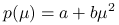

Decide how the output from uvspec is processed:
output type
where type is one of
- sum
-
Sum output over wavelength. Useful in combination with the correlated_k option (kato, kato2, kato2.96, Fu, avhrr_kratz).
- integrate
-
Integrate output over wavelength for solar and over wavenumber for thermal simulations. Useful for spectral calculations and correlated_k lowtran.
- per_nm
-
Output is given in W/(m
 nm) or mW/(m nm) (W or mW is determined by the extraterrestrial spectrum.)
nm) or mW/(m nm) (W or mW is determined by the extraterrestrial spectrum.) - per_cm
-
Output is given in W/(m
cm or mW/(m cm). - per_ck_band
-
Output is given in W/m
or mW/m per correlated-k band. (This option can not be used for
spectral calculations and correlated_k LOWTRAN in the solar range.) - none
-
No processing - output spectral information (default).